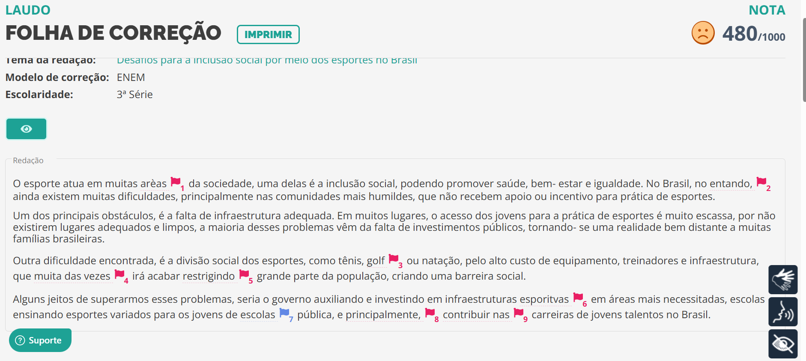
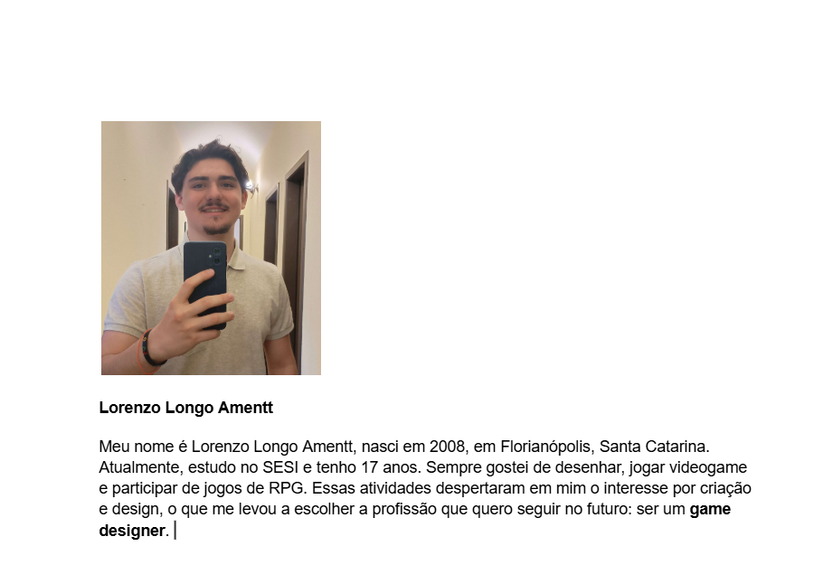

Rumo à FaculdadeLinguagens
O projeto de grupo "INFORMA ENEM" consiste em criar um site no Google Sites para expandir o conhecimento da turma, com conteúdos e fontes de informação confiáveis. O site será alimentado com materiais de sites de notícias, artigos científicos, livros, entre outros, cobrindo categorias como Direitos Humanos, Cinema, Dados Estatísticos, Autoridades no Assunto (filósofos, sociólogos, etc.), Literatura e Fatos Históricos. Cada conteúdo postado incluirá um resumo, imagem e o link ou vídeo completo, com a orientação dos professores nas áreas relevantes.
Acessar Atividade
RedaçãoLinguagens
Nesta atividade, produzimos uma redação dissertativa-argumentativa com o tema "Desafios para a inclusão social por meio dos esportes no Brasil", seguindo o modelo do ENEM. O objetivo é refletir sobre as dificuldades enfrentadas pela população para acessar práticas esportivas e propor possíveis soluções. Primeiro, farei o rascunho à mão e, em seguida, transcreverei o texto para a plataforma Red1000, respeitando o tempo máximo de duas horas para a conclusão.
Revista LiteráraLinguagens
Prezados, como combinado em aula, segue o documento com as diretrizes para a produção do exercício reflexivo sobre o Fascismo. A atividade deverá ser feita em grupos de até 5 pessoas e as respostas serão compartilhadas em um debate geral com a turma.
BiografiaLinguagens
Na atividade, os alunos devem escrever uma biografia pessoal, destacando informações importantes como a data e local de nascimento, a escola em que estudam, seus principais interesses (como matérias de estudo) e a profissão que pretendem seguir. A biografia deve ser feita em terceira pessoa e pode ser adaptada conforme o contexto, seja para redes sociais, currículo ou outras finalidades profissionais. Além disso, é necessário adicionar uma foto pessoal no início do texto, junto com o nome completo. O objetivo é aprender a apresentar informações de forma clara e concisa.
